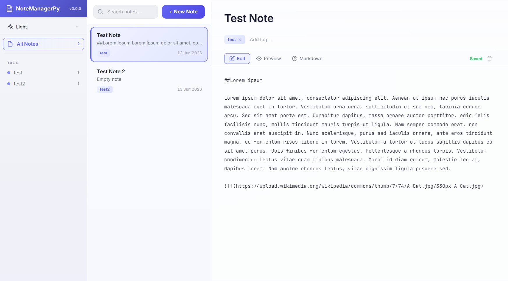
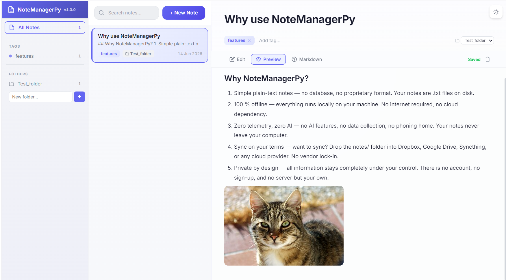

Portable, browser-based note manager. Double-click, take notes, close. No install, no cloud, no AI.
No database, no proprietary format. Your notes are .txt files on disk, readable by any text editor.
Everything runs locally on your machine. No internet required, no cloud dependency.
No AI features, no data collection, no phoning home. Your notes never leave your computer.
Drop the notes/ folder into Dropbox, Google Drive, Syncthing, or any cloud provider. No vendor lock-in.
All information stays completely under your control. There is no account, no sign-up, and no server but your own.


Single executable, zero dependencies. No Python, no npm, no Docker. Runs on Windows, Linux, and macOS. Just double-click and go.
Debounced auto-save with a save-status indicator. Every change is written to disk moments after you stop typing — never lose a note.
Write in Markdown with live HTML preview. Three-panel layout: sidebar tags, note list, and inline editor — navigate entirely by mouse or keyboard.
Organize notes with tags. Autocomplete suggests existing tags as you type. Click a tag in the sidebar to filter, click again to deselect.
Light, Sepia, Solarized Light, One Dark, Nord, Dracula. Switch from the top bar — your preference is persisted to localStorage across sessions.
Full-text search across all notes. Results update as you type, matching note titles and content. Press Escape to clear the search.
Everything runs locally. No internet, no cloud, no accounts, no telemetry, no AI. Your notes are yours — no one else can read them.
Notes are plain .txt files on disk, compatible with the original NoteManageR format. Open them in any editor, sync with any cloud.
chmod +x NoteManagerPy-Linux./NoteManagerPy-Linuxchmod +x NoteManagerPy-macOS./NoteManagerPy-macOS| Theme | Description |
|---|---|
| Light | Clean white background, dark text |
| Sepia | Warm paper-toned background |
| Solarized Light | Solarized light color scheme |
| One Dark | Atom One Dark syntax colors |
| Nord | Arctic, bluish dark theme |
| Dracula | Dark purple-based theme |
pip install -r requirements.txt
python scripts/build.py
Requires Python 3.12+. The executable appears in the project root.